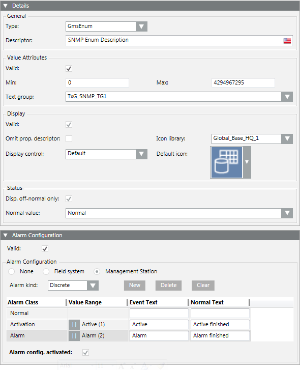

Configuring Unsigned Integer (GmsEnum)
The following provides the detailed configuration of the Unsigned Integer DPE type, used as GmsEnum.

GmsEnum is the only DPE type to use for reading values from a text table (such as, Text Group).
- In the Details expander, specify the following:
- Type: Select GmsEnum.
- Description: Enter the text you want to view in the various applications for the point instances (for example, SNMP EnumDescription).
- Activate the Value Attributes configuration. Verify that Min/Max values match the variable size (see SNMP Data Types Relationship) required by the SNMP point (for example, Min/Max values go from 0 to 4294967295 (default)). Select the Text group from which the property values must be read (for example, TxG_SNMP_TG1 as text group. For more details about the text groups creation, see Configure SNMP Text Groups for the Custom Device).
- Activate the Display configuration and select the Icons library and the Icon (if needed; for example, choose an icon from the Icons library belonging to the Global_Base_HQ_1 library).
- Define the behavior of the Status flag and the corresponding Normal value (select the Disp. off-normal only option to display the property only if off-normal, that is, when its Normal value is different from Normal, that is read from the Text group and equal to 0).
- In the Alarm Configuration expander, do the following:
- Enable the Alarm Configuration and select the Management Station option. Then define the behavior of all the alarms belonging to this DPE. For example, when the SNMP point has the value Active (read from Text Group and equal to 1), the management station will trigger an Activation event; when the SNMP point has the value Alarm (read from Text Group and equal to 2), the management station will trigger an Alarm event, and so on.
- If needed, select the Alarm config. activated option to activate the alarm configuration.
